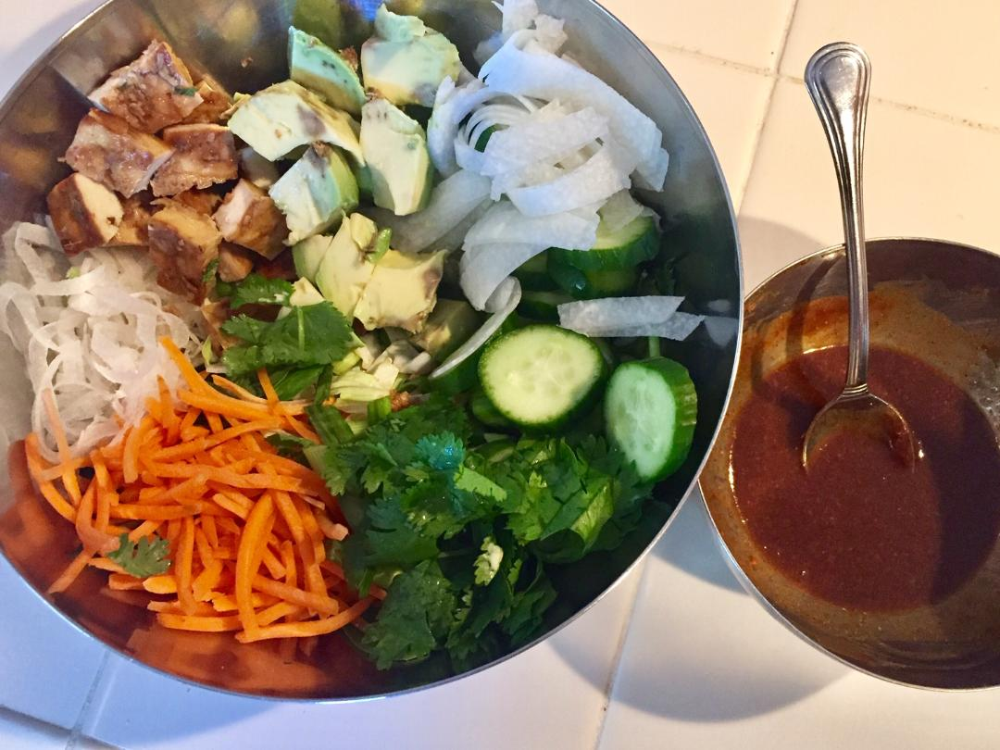
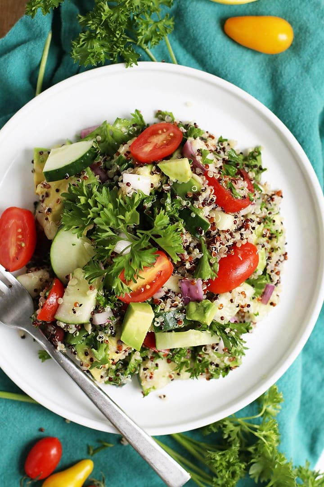

Home
What's Cooking ?

-

Curried Cauliflower Soup
Creamy, yet cream-less, cauliflower soup.
-

Buddha Bowl
This versatile bowl is unbelievably tasty and nutritious, too!
-

Buffalo Cauliflower
They’re so flavor-packed that won’t even miss wing night with these around.
-

Quinoa Salad
Ratatouille vegetables with quinoa and Mediterranean flavors.